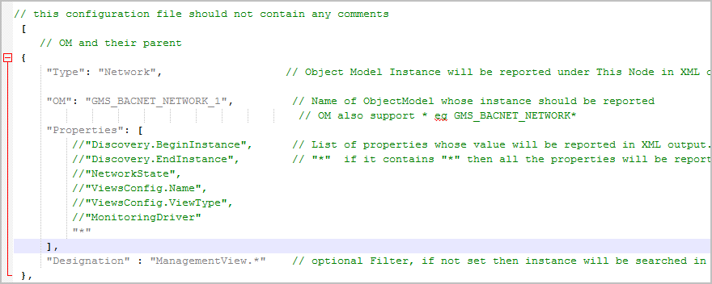
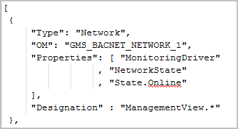
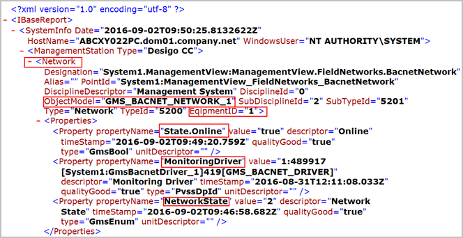

Network Section
This section contains information related to the networks in the library of the extension module.
You need to provide the name of the OM whose instances should be reported, along with its properties. Provide the complete designation name.
The 3rd party BACnet extension module, the IBaseConfigurationScript.json file for network and drivers is available under
[Installation drive]:\[Installation folder]\[Project Name]\libraries\Global_BACnet_HQ_1\Scripts.
IBaseSampleConfiguration.json File
Contains the structure for providing OMs and their properties for a network of an extension module. As an example, it displays the pre-configured OM and properties for the 3rd party BACnet network.

Corresponding Section for the 3rd Party BACnet Extension Moduled
Contains the pre-configured OM, GMS_BACNET_Network_1, along with its properties, and the designation name.

Section in the IBase Report for the 3rd Party BACnet Extension Module
Displays the OM and the relevant properties as configured in the IBaseConfiguration.json for the 3rd party BACnet extension module.
